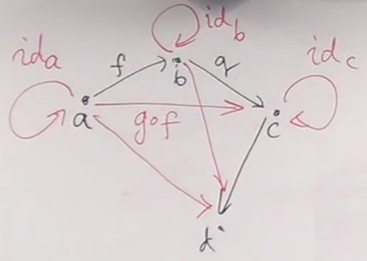
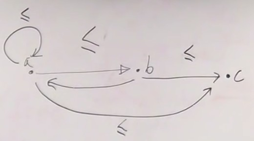
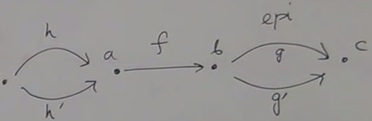
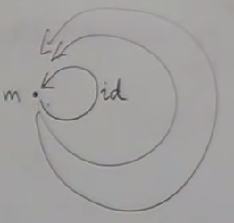

Empty category
A category with no object and no arrow. The axioms af a category are satisfied :- For any pair of composable arrows, there is an arrow going straight from
AtoC. If there are no pair, this is automatically satisfied. - For any object, there has to be an identity. If there is no object, it's automatically satisfied.
By itself this category is useless. The value of this category is in context. In the category of all categories, or in the category of small categories, this is important (it's a terminal object).
One object category
It has at least one arrow, the identity. Also useless by itself, but useful in the context of all categories (it's also a terminal object).Free construction from a graph
If we have a graph and want to build a category from it, we can do it by adding arrows.  - Add identity arrows for all nodes of the graph.- Add arrows that permit composability.
And we must check that associativity is satisfied.
For finite graphs, we get a category by adding a finite number of arrows.
This construction in which we just keep adding stuff in order to satisfy the axioms is a very common construction in category theory.
It's called free construction ; free because we have no constraint other than the constraints required by the definition of a category.
Free construction can be applied to get a free group, a free monoid and so on.
We'll see applications of free construction for our programming tasks.
Orders
Orders are categories in which arrows are not functions ; in zero and one object categories, arrows were not functions, but they are abstract arrows which do not have intuitive meaning.In orders, arrows represent a relation. In particular an interesting relation is less or equal (≤).
If we have two objets
a and b, we draw an arrow from a to b if a ≤ b (we also say "a comes before b").
There are certain conditions an order has to fullfill in order to be an order.
And there are different types of orders : preorders, partial orders, total orders. We are mostly familiar with total order, because when we are sorting, we require that the elements satisfy a total order.
Preorders
We only require composition : ifa ≤ b and b ≤ c, then we want a ≤ c

In a preorder, there is either one arrow or no arrow between two objects. There cannot be multiple arrows between two objects.
Between two objects means starting from one object and ending to an other object. In principle we can have an arrow going backwards too.
Associativity is obvious.
And there must be identity (the relation must be reflexive) ; that's why there is the "or equal".
A category like this is called a thin category. Every thin category corresponds to a preorder, and every preorder corresponds to a thin category ; there is a one to one correspondance.
If we consider all the different kinds of orders, category theory tells us that preorders are the most basic.
The set of arrows between two objects in a category is called the hom-set.
The hom-set in a category C between objects a and b is noted C(a,b)
We can have C(a,a)
A hom-set is a set in the sense of set theory.
A thin category is a category in which every hom-set has either zero or one element.
Partial orders
We impose additional conditions on preorder to get a partial order.Partial order is something that has no loops : if you have an arrow from a to b, you cannot have an arrrow from b to a.
If wee look at it as a graph, it corresponds to a Directed Acyclic Graph (DAG).
Total Orders
The additional condition is that there is one arrow between every object of the category.Epic and monic but not isomorphic
 Going back to the definition of epiomrphism and monomorphism in terms of equality of arrows that go from or to beginning or end of morphism, we see that this is automatically satisfied in a thin category as there is only one arrow between two objects.So every arrow in a preorder is an epimorphism and a monomorphism at the same time. But it is not necessarily invertible. In a partial order, this is never invertible because there is no loops.
This is a counter example : an arrow can be both an epimorphism and a monomorphism without being invertible.
This is different from functions defined with sets, were a injective and surjective function is a bijection (then invertible).
Thick categories
Categories where hom-sets have multiple arrows. In a thin catgory, there may be one or zero arrow ; there is or there is no relation ; a black and white world.In a thick category, there may be multiple arrows between objects. If there are no arrows, the objects are not in relation. If there are multiple arrows, they can be seen as different proofs of the relation ; a category can be seen as a proof-relevant order.
This kind of proof-relevant stuff is becoming more and more important in homotopy type theory, which is built on the asumption that it's not only enough to show that something is related to something else, tehre are different ways to show they are related, and they are not equivalent.
Monoids
A one-object category can have many loops. One of them is the identity  All the arrows are composable because the beginnings and ends of all arrows are the unique object.A category with a single object is called a monoid.
Monoids are known from algebra as a set of elements and a binary operation (let's call it multiplication) with two conditions imposed :
-
There is a special element called unit (noted
e) such as when you multiply (left or right multiplication) an element by unit, you get the same element :∃ e | ∀ a, a * e = e * a = a
(there existsesuch as for alla,a * e = e * a = a)) - The operation is associative :
(a *b) * c = a * (b * c)
- Natural numbers with multiplication (
e= 1) - Natural numbers with addition (
e= 0) - String concatenation (
e= empty string) - interesting example because the operation is not symetric, like addition or multiplication - List concatenation with appending operation (
e= empty list).
If we call
M the monoid defined as a catgory, M has only one hom-set ; M(m, m) is the set of arrrows that start and end at m.
This hom-set is a set.
-
So we can go from our category
Mto a monoid defined in terms of set theory : the category defines a setM(m, m); taking two elements from this set (which correspond to two arrows), there is a third element which corresponds to the composition of theses arrows ; the composition corresponds to the multiplication. And one of the elements of the set corresponds to identity, which is automatically a unit. And it's associative. - And vice-versa if we start with a monoïd in set theory, we can create a category and define composition using the multiplication.
Back to programming, the category of types corresponds to a system that is strongly typed. You cannot compose any two functions, you can compose only functions that match ; the result of one function must have a type that is the same as the argument to the next functioon.
A momoid is a very special category in which any two functions are composable ; that corresponds to languages which have weak typing.